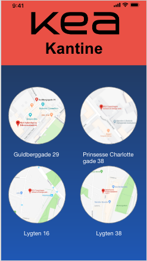

I det aller sidste forløb på første semester skulle vi med udgangspunkt i Design Sprint, komme på en ide til en app der kunne gavne eleverne på KEA, ud fra de "pains" de følte prægede deres hverdag. For at komme frem til en løsning der gavnede eleverne på KEA, lavede vi interviews med elever på KEA for at se om vi var på rette spor i forhold til appens indhold og mangler. Dette projekt var især spændende da vi skulle pitche vores app efter NABC-modellen. Jeg synes det var fedt at komme op og "sælge" sin ide foran et crowd, da det er noget jeg selv føler at jeg er god til, og er noget jeg gerne vil gøre fremtidigt, hvis jeg en dag skulle have en selvstændig virksomhed.